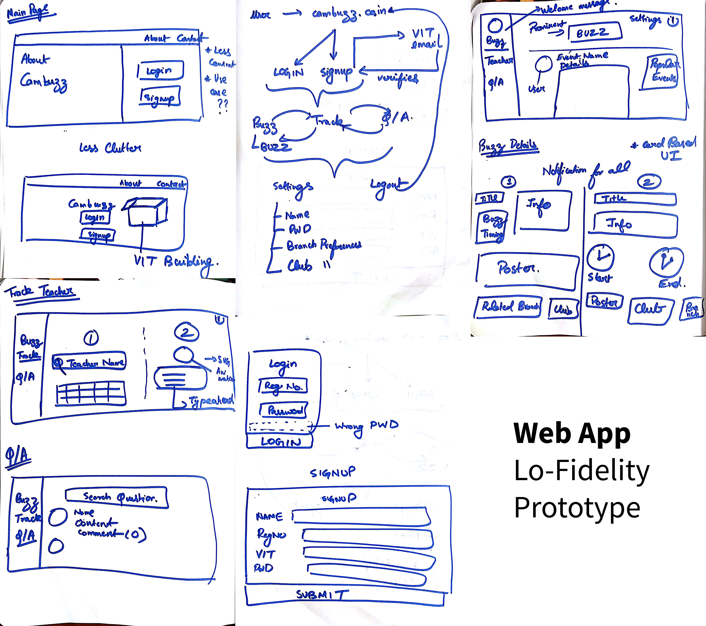

Headquartered in Vellore Institute of Technology Chennai, Cambuzz began as a side project and is now a tiny, bootstrapped idea helping the VIT Chennai family to share their events and is trying to become a go-to resource for discovering and connecting with everyone in the campus. Since the problems students faced in our campus were generic, we open sourced the platform to realize our vision of creating an equal playground in terms of opportunities and exposure.
MOTIVATION
In our freshman year, we felt that we were at a disadvantage in terms of exposure compared to the premier colleges in India. We realised that lot of complications in the existing education system in India are a manifestation of one core problem: effective communication.

PROCESS
Since we had literally no exposure to product building, we built Cambuzz solely on our instincts. Repeated user feedbacks helped in design iteration. All our team knew was:
Move fast and break things. Unless you are breaking stuff, you are not moving fast enough. - Mark Zuckerberg.
Our brainstorming sessions happened in night after classes and we used whiteboards to conceptualize our product. Insights from the discussion included bringing the feature set from 8 to 3, changing the project workflow even it meant changing our operating system (Goodbye Windows, Hello Linux!), and learning about each member’s strength and weaknesses.

Ultimately we designed down on 3 main features:
- Buzz: get to know about all the events happening in our campus.
- Track Teacher: searchable database of teacher’s details and probable free slot for interaction.
- Q/A Forum: ask questions, get answers and network with your peers in our campus.
LOW FIDELITY PROTOTYPING
I didn’t even knew the process of making design related notes were actually called lo-fi prototyping! These were some of the notes we had made during the design ideation process:

ARCHITECTURE

WEBAPPS

ANDROID APP
Video
GALLERY